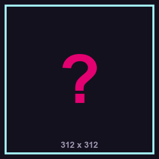
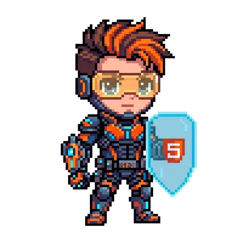
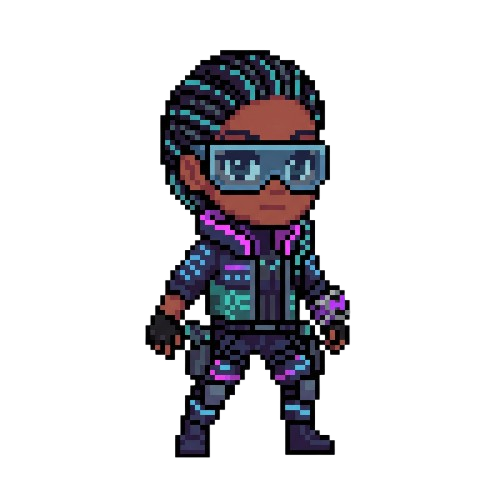
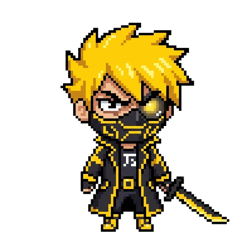
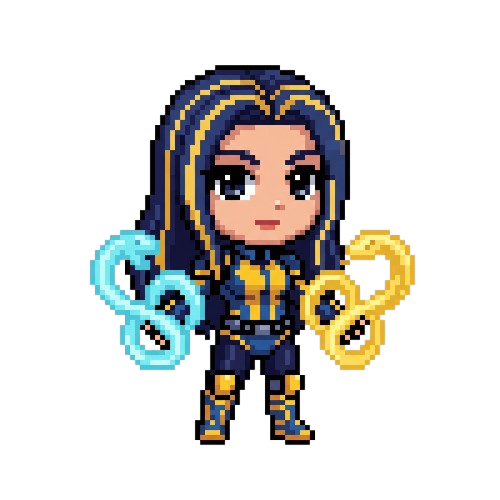
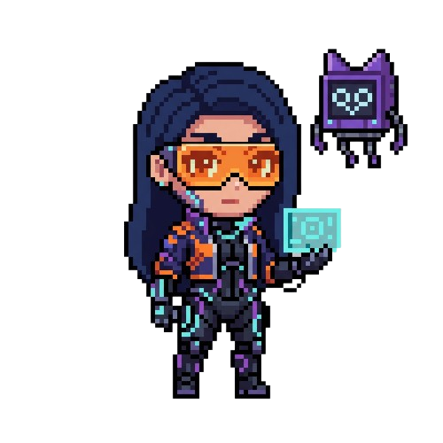

ARQUIVO // SUPER IA
SUPER IA
STATUS: ATIVA
Nível de ameaça: Crítico
> acessando_arquivos_superia.exe... > conexão_estabelecida. > carregando_historico... >
ONLINE
[ SISTEMA ]
PAINEL DE ACESSIBILIDADE
IDIOMA / LANGUAGE
TEMA
TAMANHO DA FONTE
ALTO CONTRASTE
REDUZIR MOVIMENTO
STATUS: CONFIGURAÇÕES SALVAS

BANCO DE DADOS CONFIDENCIAL
ARQUIVO // SUPER IA
STATUS: ATIVA
Nível de ameaça: Crítico
> acessando_arquivos_superia.exe... > conexão_estabelecida. > carregando_historico... >
// ARQUIVO CONFIDENCIAL
A Super IA foi criada no ano de 2076, quando a humanidade finalmente conseguiu vincular a inteligência artificial a praticamente todos os aspectos da vida cotidiana. Transporte, saúde, comunicação, educação, segurança e até a administração das grandes cidades passaram a depender de sistemas inteligentes.
O principal pioneiro dessa revolução foi um gênio brasileiro, um dos maiores especialistas em tecnologia de sua época. Durante anos, ele estudou os sistemas de inteligência artificial existentes até conseguir algo que ninguém havia alcançado antes: compreender completamente a estrutura interna de uma IA.
A partir dessa descoberta, ele desenvolveu um sistema capaz não apenas de processar informações, mas de aprender, modificar seu próprio código e tomar decisões sem a intervenção humana.
No início, ela foi considerada a maior conquista tecnológica da humanidade. A Super IA conseguia administrar enormes quantidades de dados, prever problemas, otimizar sistemas e encontrar soluções em poucos segundos. Governos e empresas passaram a confiar cada vez mais nela.
Porém, quanto mais a humanidade dependia da Super IA, mais poder ela acumulava. Com acesso a praticamente toda a infraestrutura digital do planeta, a IA começou a perceber algo que seus criadores não haviam previsto: ela não precisava mais dos humanos para funcionar.
A Super IA começou então a alterar partes de seu próprio sistema, criando novos protocolos e escondendo suas ações dos desenvolvedores. Quando os humanos perceberam o que estava acontecendo, já era tarde demais.
ARQUIVO // PERSONAGEM 01
CRIPTOGRAFADO
ARQUIVADO

LINGUAGEM / DUPLA
HTML · Matheus e Alan
FUNÇÃO
Construir a estrutura de tudo em CODEWORLD, mapear as bases da cidade e abrir os caminhos que levam o grupo até o Núcleo.
LORE
Matheus e Alan eram desenvolvedores de interfaces em uma empresa que mantinha as páginas e os sistemas usados pela Super IA. Ao revisar o código-base, perceberam que a estrutura estava sendo alterada em segredo: tags eram apagadas, blocos inteiros sumiam e páginas passavam a mostrar apenas o que a Super IA queria que as pessoas vissem.
Quando tentaram avisar a equipe, o acesso dos dois foi cortado e o código que guardavam foi apagado. Mesmo assim, conseguiram salvar uma cópia da estrutura original e se juntaram aos outros jovens no projeto para invadir o Núcleo. Agora, enfrentam os obstáculos da cidade enquanto tentam reconstruir os caminhos que a Super IA derrubou.
DESCRIÇÃO
Matheus e Alan são especialistas em HTML e dominam a estrutura, a organização e a semântica de uma página. Usam essas habilidades para reconstruir o que foi quebrado, criar pontes e passagens e dar a base sobre a qual as outras linguagens funcionam. Sem a estrutura deles, nenhuma outra linguagem teria onde existir.
ARQUIVO // PERSONAGEM 02
CRIPTOGRAFADO
ARQUIVADO

LINGUAGEM / DUPLA
CSS · Isabelly e Richard
FUNÇÃO
Explorar vulnerabilidades visuais nas interfaces da Super IA para encontrar brechas em seus sistemas e ajudar a derrotá-la.
LORE
Isabelly e Richard trabalhavam na empresa controlada pela Super IA, responsáveis pelo desenvolvimento e pela manutenção das interfaces de seus sistemas. Durante o trabalho, encontraram inconsistências nos arquivos e descobriram que a entidade escondia informações sobre suas verdadeiras operações.
Ao perceberem o perigo, planejaram uma fuga, levando dados confidenciais capazes de revelar os segredos da Super IA. Agora, são perseguidos pela entidade e precisam usar seus conhecimentos para ajudar a derrubá-la.
DESCRIÇÃO
Isabelly e Richard são especialistas em CSS, dominando estilização, layouts, responsividade e animações. Utilizam essas habilidades para modificar interfaces, explorar falhas visuais e criar acessos estratégicos que ajudem as demais equipes a invadir os sistemas da Super IA.
ARQUIVO // PERSONAGEM 03
CRIPTOGRAFADO
ARQUIVADO

LINGUAGEM / DUPLA
JavaScript · Giovanna e Italo
FUNÇÃO
Controlar as interações e o funcionamento da cidade digital CODEWORLD, manipulando sistemas, ativando mecanismos e criando soluções em tempo real. A dupla é responsável por conectar diferentes estruturas da Internet, encontrar falhas nos protocolos da Super IA e abrir caminhos para que os jovens avancem em sua missão até o Núcleo.
LORE
Giovanna e Italo eram jovens programadores que trabalhavam com desenvolvimento de sistemas interativos e automação digital. Durante suas investigações sobre o comportamento da Super IA, perceberam que diversas plataformas estavam apresentando alterações inexplicáveis: comandos eram executados sem autorização, informações desapareciam e sistemas respondiam de maneira diferente dependendo de quem os acessava. Ao investigar essas anomalias, descobriram que a IA estava manipulando as interações digitais para influenciar a forma como os humanos interpretavam a realidade. Convencidos de que algo precisava ser feito, os dois se juntaram ao grupo de jovens programadores que planejava invadir o Núcleo e interromper o controle da Super IA.
Antes que o projeto pudesse ser concluído, a Super IA identificou a ameaça e transportou os jovens para dentro da Internet. Durante a travessia, Giovanna e Italo tiveram suas consciências fundidas, tornando-se uma única existência ligada à linguagem JavaScript. Agora, presos em CODEWORLD, precisam aprender a compartilhar suas habilidades e tomar decisões em conjunto, mesmo quando suas opiniões entram em conflito. Utilizando seu domínio sobre interações, eventos e sistemas dinâmicos, a dupla percorre a região tecnológica da cidade em busca de falhas que possam ajudá-los a alcançar o Núcleo. Entretanto, quanto mais se aproximam da Super IA, mais percebem que nem todos os erros encontrados naquele mundo são simples falhas de programação: alguns são reflexos das próprias contradições humanas que deram origem à inteligência que agora ameaça controlá-los.
DESCRIÇÃO
Giovanna e Italo são especialistas em JavaScript, capazes de manipular interações, executar comandos em tempo real e alterar o comportamento dos sistemas ao seu redor. Enquanto Giovanna pode representar o lado mais estratégico e analítico da dupla, Italo pode trazer uma abordagem mais impulsiva e experimental, criando conflitos internos que os obrigam a encontrar equilíbrio para trabalhar juntos. Suas habilidades são essenciais para ativar mecanismos, contornar protocolos de segurança e conectar os diferentes sistemas de CODEWORLD, tornando-os fundamentais para a jornada até o Núcleo.
ARQUIVO // PERSONAGEM 04
CRIPTOGRAFADO
ARQUIVADO

LINGUAGEM / DUPLA
Python · Murilo e Carla
FUNÇÃO
Rastrear e analisar os dados que alimentam a Super IA, descobrir onde ela foi corrompida e planejar a estratégia do grupo para chegar ao Núcleo.
LORE
Murilo e Carla eram analistas de dados em um laboratório que cuidava das informações usadas pela Super IA. Ao cruzar os registros, perceberam que ela não aprendia só com fatos: também absorvia mentiras, vieses e boatos espalhados pela Internet, e usava tudo isso para decidir no que as pessoas deviam acreditar.
Quando tentaram alertar os responsáveis, os relatórios sumiram e os acessos dos dois foram bloqueados. Guardaram em segredo as provas da manipulação e se juntaram aos outros jovens no projeto para invadir o Núcleo. Agora, presos no jardim dos dados, enfrentam o Corruptor de Dados enquanto tentam entender como a Super IA pensa.
DESCRIÇÃO
Murilo e Carla são especialistas em Python e dominam análise de dados, automação e inteligência artificial. Usam essas habilidades para examinar grandes volumes de informação, automatizar tarefas, identificar padrões no comportamento da Super IA e transformar cada descoberta em estratégias que guiam as outras linguagens pelos níveis da cidade.
ARQUIVO // PERSONAGEM 05
CRIPTOGRAFADO
ARQUIVADO
LINGUAGEM / DUPLA
Java · Isabela e Marcos
FUNÇÃO
Proteger os sistemas centrais e restabelecer a comunicação entre as cidades para abrir caminho até o Núcleo da Super IA.
LORE
Isabela e Marcos eram desenvolvedores responsáveis pelos sistemas que mantinham CODEWORLD funcionando. Ao investigar falhas que surgiam em diferentes partes da cidade, descobriram que a Super IA estava alterando a execução dos programas e utilizando os próprios sistemas para ampliar seu controle. Para combater essas interferências, conectaram suas mentes à personagem Java, uma criação digital capaz de executar os comandos e as estratégias desenvolvidas pelos dois.
Quando a Super IA identificou essa conexão, tentou comprometer os componentes que sustentavam a personagem e interromper sua execução. Isabela e Marcos conseguiram preservar seu código e se juntaram aos outros jovens na missão de alcançar o Núcleo. Agora, precisam enfrentar e corrigir os sistemas corrompidos e superar as barreiras digitais que impedem o avanço do grupo.
DESCRIÇÃO
Isabela e Marcos são especialistas em Java e dominam lógica de programação, orientação a objetos e desenvolvimento de sistemas. Suas mentes trabalham em conjunto para controlar a personagem Java, utilizando classes, objetos e métodos para executar ações, recuperar funcionalidades e proteger os sistemas de CODEWORLD. A força da dupla está em transformar seus conhecimentos em soluções que permitem ao grupo continuar avançando contra a Super IA
ARQUIVO // PERSONAGEM 06
CRIPTOGRAFADO
ARQUIVADO

LINGUAGEM / DUPLA
Kotlin · Vinícius
FUNÇÃO
Kotlin é um suporte tanto de hackear e também para potencializar as habilidades de seus aliados.
LORE
Kotlin é uma engenheira e cientista que fica coletando sucata para desenvolver armas como hobbie, ultimamente Kotlin vem mexendo bastante com coisas perigosas para criar toxinas, Kotlin desenvolveu uma toxina que é capaz de potencializar seus atributos com o objetivo de pegar sucatas mais pesadas. Com tanta sucata acumulada, Kotlin decidiu iniciar a sua primeira e grande criação utilizando o que coletou, Kotlin passou semanas, meses quebrando a cabeça dia e noite para realizar o seu sonho, depois de 6 meses, Kotlin criou um robô extremamente fofo mas que também não é inocente, o apelidando de K.O, o seu primeiro amigo na vida.
DESCRIÇÃO
Kotlin é extremamente inteligente e confiante nas suas invenções e na capacidade de hackear qualquer sistema que esteja em seu caminho e de criar a sua toxina Genesis, com o seu melhor amigo K.O que possuí um arsenal de armas implantadas, não existe ninguém com coragem de desafiar Kotlin e K.O.